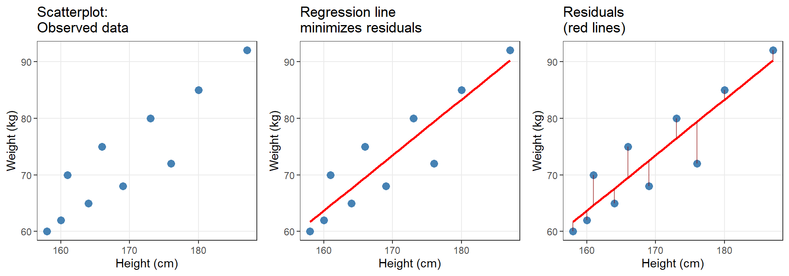

Regression Analysis: Conceptual Foundations

Introduction
This tutorial introduces regression analysis — one of the most widely used statistical methods in linguistics, psychology, and the language sciences. Regression models allow us to assess whether and how predictor variables (independent variables) correlate with an outcome variable (dependent variable), while controlling for the effects of other predictors (Field, Miles, and Field 2012; Gries 2021; Winter 2019).

Tutorial Scope and Structure
This is Regression Analysis: Conceptual Foundations. It covers regression theory without R code.
Regression Analysis: Implementation in R (separate tutorial) shows how to run, diagnose, and report regressions using modern R packages.
Prerequisites:
What this tutorial covers:
- What is regression and how does it work?
- Types of regression models
- Model assumptions and when they matter
- Interpreting coefficients, p-values, and R²
- Categorical predictors and interactions
- Model fitting strategies
- Sample size and power
- Multicollinearity
- Effect sizes
- Reporting standards
What this does NOT cover:
- R implementation (see Part II)
- Mixed-effects models (see separate tutorial)
- Causal inference (regression ≠ causation)
Citation
Martin Schweinberger. 2026. Regression Analysis: Conceptual Foundations. The Language Technology and Data Analysis Laboratory (LADAL), The University of Queensland, Australia. url: https://ladal.edu.au/tutorials/regression_concepts/regression_concepts.html (Version 2026.03.27).
Why Regression?
Regression models are popular because they:
- Handle multiple predictors simultaneously — test the effect of one predictor while controlling for all others (multivariate analysis)
- Are extremely flexible — can handle numeric, categorical, ordinal, and count outcomes
- Produce interpretable output — coefficients, p-values, confidence intervals, effect sizes
- Are conceptually accessible — mathematically simpler than many machine learning methods
- Are widely reported — facilitates comparison across studies and meta-analysis
What Is Regression?
At its core, regression is a method for modeling the relationship between:
- One or more predictor variables (independent variables, IVs, explanatory variables)
- A single outcome variable (dependent variable, DV, response variable)
The fundamental regression equation is:
\[\text{Outcome} = \text{Intercept} + \text{Coefficient} \times \text{Predictor} + \text{Error}\]
Or in standard notation:
\[y = \alpha + \beta x + \epsilon\]
Where:
- \(y\) = the outcome we want to predict
- \(\alpha\) (alpha) = intercept — the predicted value of \(y\) when all predictors = 0
- \(\beta\) (beta) = coefficient (slope) — how much \(y\) changes for a 1-unit increase in \(x\)
- \(x\) = predictor variable
- \(\epsilon\) (epsilon) = residual (error) — the difference between observed and predicted \(y\)
A Concrete Example
Suppose we want to predict weight (kg) from height (cm). The regression equation might be:
\[\text{Weight} = -93.77 + 0.98 \times \text{Height}\]
Interpretation:
- Intercept (−93.77): A person with height = 0 cm would weigh −93.77 kg. (Nonsensical! This is why centering predictors matters — more later.)
- Coefficient (0.98): For every 1 cm increase in height, weight increases by 0.98 kg on average.
- Prediction: A person who is 180 cm tall is predicted to weigh: \(-93.77 + 0.98 \times 180 = 82.63\) kg.
The residual for this person is the difference between their actual weight and the predicted 82.63 kg.
The Geometry of Regression: Finding the Best Line
Regression aims to find the line of best fit — the line that minimizes the sum of squared residuals (the vertical distances between observed data points and the regression line). This is called ordinary least squares (OLS) regression.
Key insight: The regression line is positioned such that the sum of squared residuals is minimized. No other line through the data would have a smaller total squared error.
Types of Regression Models
The type of regression you use depends on the measurement scale of your outcome variable:
| Outcome variable type | Regression type | Example |
|---|---|---|
| Continuous (numeric), normally distributed, no extreme outliers | Simple/Multiple Linear Regression | Predicting reaction time (ms) from word frequency |
| Binary (two categories: yes/no, success/failure) | Logistic Regression | Predicting whether a speaker uses -er vs. more |
| Ordinal (ordered categories, e.g., Likert scale: strongly disagree → strongly agree) | Ordinal Regression | Predicting acceptability ratings (1–7 scale) |
| Count (non-negative integers: 0, 1, 2, …) of rare events | Poisson Regression | Predicting number of discourse particles per utterance |
| Continuous with outliers that cannot be removed | Robust Regression | Predicting word frequency with extreme high-frequency function words |
Fixed-Effects vs. Mixed-Effects Regression
Fixed-effects regression (this tutorial) assumes:
- All data points are independent
- No hierarchical structure (no nesting: e.g., students within classes, words within speakers)
Mixed-effects regression (separate tutorial) is required when:
- Data points are nested or grouped (e.g., multiple observations per participant)
- You need random effects to model subject/item variability
If your data has repeated measures or hierarchical structure, see the mixed-effects tutorial.
Model Assumptions
Regression models rest on mathematical assumptions. Violating these assumptions can produce unreliable results.
Assumptions for Linear Regression
- Linearity: The relationship between predictors and outcome is linear
- Independence: Observations are independent (no autocorrelation, no nesting)
- Homoscedasticity: Residuals have constant variance across all levels of predictors
- Normality of residuals: Residuals are approximately normally distributed
- No perfect multicollinearity: Predictors are not perfectly correlated with each other
- No influential outliers: Extreme data points do not dominate the model fit
When assumptions are violated:
| Violation | Solution |
|---|---|
| Non-linearity | Transform variables (log, sqrt) or use non-linear models |
| Non-independence | Use mixed-effects models or account for clustering |
| Heteroscedasticity | Use robust standard errors or transform outcome |
| Non-normal residuals | For large samples (n > 30–50), Central Limit Theorem provides protection; otherwise transform or use non-parametric methods |
| Multicollinearity | Remove redundant predictors or use regularization |
| Outliers | Use robust regression or remove outliers with strong justification |
Assumptions for Logistic/Ordinal/Poisson Regression
Non-linear regressions (logistic, ordinal, Poisson) do not assume:
- Normality of the outcome
- Homoscedasticity
But they do assume:
- Independence of observations
- No multicollinearity among predictors
- Linearity of the logit (for logistic regression: the log-odds are linear in the predictors)
- No complete separation (for logistic: if a predictor perfectly predicts the outcome, the model breaks)
Interpreting Regression Output
A regression model produces several key statistics. Here’s what they mean:
Coefficients (β)
Interpretation depends on regression type:
| Regression type | Coefficient interpretation |
|---|---|
| Linear | A 1-unit increase in \(x\) is associated with a \(\beta\)-unit change in \(y\) |
| Logistic | A 1-unit increase in \(x\) multiplies the odds of the outcome by \(e^\beta\) |
| Ordinal | A 1-unit increase in \(x\) changes the log-odds of being in a higher category by \(\beta\) |
| Poisson | A 1-unit increase in \(x\) multiplies the expected count by \(e^\beta\) |
Standard Error (SE)
The SE tells us how much the coefficient would vary if we repeated the study many times with different samples from the same population. Smaller SE = more precise estimate.
\[\text{SE} = \frac{SD}{\sqrt{n}}\]
t-value (linear) or z-value (logistic/Poisson)
\[t = \frac{\text{Coefficient}}{\text{SE}}\]
The t- or z-value measures how many standard errors the coefficient is away from zero. Larger absolute values → stronger evidence against H₀: β = 0.
p-value
The probability of observing a coefficient this large (or larger) if the true effect were zero. p < .05 is the conventional threshold for “statistical significance.”
p-values ≠ Effect Size
A tiny, practically meaningless effect can be “significant” with a large enough sample. A large, important effect can be “non-significant” with a small sample. Always report effect sizes alongside p-values.
R² (for linear regression)
R² = proportion of variance in the outcome explained by the model.
- R² = 0: Model explains no variance (useless)
- R² = 0.10: 10% of variance explained (weak but possibly meaningful in social sciences)
- R² = 0.50: 50% of variance explained (strong)
- R² = 1: Perfect fit (only possible with measurement error = 0)
Adjusted R² penalizes models for including many predictors. It is always ≤ R² and prevents overfitting.
\[R^2_{\text{adjusted}} = 1 - \frac{(1 - R^2)(n - 1)}{n - k - 1}\]
where k = number of predictors.
AIC and BIC (model comparison)
Akaike Information Criterion (AIC) and Bayesian Information Criterion (BIC) balance model fit against complexity. Lower values = better models.
\[\text{AIC} = -2 \times \text{LogLikelihood} + 2k\]
\[\text{BIC} = -2 \times \text{LogLikelihood} + k \times \log(n)\]
Use AIC/BIC to compare models fit on the same data:
- ΔAIC < 2: Models are essentially equivalent
- ΔAIC = 2–7: Moderate evidence for the model with lower AIC
- ΔAIC > 10: Strong evidence for the model with lower AIC
Exercises: Regression Basics
Q1. What does the intercept (α) in a regression represent?
Q2. A logistic regression reports a coefficient β = 0.693 for a predictor. What is the odds ratio (OR)?
Q3. Which regression assumption is VIOLATED if residuals increase in variance as the predicted values increase (forming a funnel shape in a residuals plot)?
Q4. A researcher reports: ‘Our model explains 45% of the variance (R² = 0.45).’ What does this mean?
Categorical Predictors in Regression
So far we have discussed regression with continuous predictors (e.g., year, height, test scores). But regression can also handle categorical predictors (e.g., gender, experimental condition, language variety).
When a categorical predictor enters a regression, R automatically converts it into dummy variables (also called indicator variables or contrast coding).
How Dummy Coding Works
Suppose we have a predictor Group with three levels: A, B, C. R creates dummy variables:
| Group | Dummy_B | Dummy_C |
|---|---|---|
| A | 0 | 0 |
| B | 1 | 0 |
| C | 0 | 1 |
The regression equation becomes:
\[y = \alpha + \beta_1 \times \text{Dummy\_B} + \beta_2 \times \text{Dummy\_C} + \epsilon\]
Interpretation:
- α (Intercept): Mean of the reference group (Group A)
- β₁: Difference between Group B and Group A
- β₂: Difference between Group C and Group A
Changing the Reference Level
By default, R uses alphabetical ordering to determine the reference level. You can change this with:
data$Group <- relevel(data$Group, ref = "B") # Set B as reference Always check which level is the reference when interpreting categorical predictors!
Example: Gender as a Predictor
If Gender has levels “Female” and “Male” (alphabetically, Female is first):
\[\text{Outcome} = \alpha + \beta \times \text{Male}\]
Where:
- α = mean outcome for females (reference group)
- β = difference between males and females (Male mean − Female mean)
If β = 15 and p < .05, males score 15 points higher on average than females.
Exercises: Categorical Predictors
Q1. A regression with predictor Condition (3 levels: A, B, C) produces two dummy variables: Condition_B and Condition_C. What is the reference level?
Q2. In a model with Gender (Female, Male) as a predictor, the intercept = 50 and the coefficient for Male = −10. What is the predicted outcome for females?
Interactions in Regression
An interaction occurs when the effect of one predictor depends on the level of another predictor. Interactions are non-additive effects.
Additive vs. Interactive Effects
Additive model (no interaction):
\[y = \alpha + \beta_1 x_1 + \beta_2 x_2\]
The effect of \(x_1\) is the same regardless of \(x_2\).
Interactive model:
\[y = \alpha + \beta_1 x_1 + \beta_2 x_2 + \beta_3 (x_1 \times x_2)\]
The effect of \(x_1\) changes depending on the value of \(x_2\).
Example: Teaching Method × Prior Knowledge
Imagine:
- Predictor 1: Teaching method (traditional vs. innovative)
- Predictor 2: Prior knowledge (low vs. high)
- Outcome: Test score
Additive model predicts:
- Innovative method adds 10 points for everyone
- High prior knowledge adds 15 points for everyone
- A high-knowledge student in the innovative method scores: baseline + 10 + 15 = 25 points above baseline
Interactive model might find:
- Innovative method helps low-knowledge students (+15 points) but not high-knowledge students (+2 points)
- This is an interaction: the effect of teaching method depends on prior knowledge
In regression output, the interaction coefficient tests: “Is the effect of \(x_1\) significantly different across levels of \(x_2\)?”
Exercises: Interactions
Q1. In a model with interaction A × B, predictor A is non-significant but the interaction is significant. Should you remove predictor A from the model?
Q2. A significant interaction between Condition (2 levels) and Gender (2 levels) means:
Model Fitting and Selection
Model fitting (also called model selection) is the process of deciding which predictors to include in the final model. The goal: find a model that explains the data well without including unnecessary predictors.
The Principle of Parsimony
Occam’s Razor: Among competing models, prefer the simplest one that explains the data adequately. Including too many predictors:
- Increases the risk of overfitting (the model fits the sample but not the population)
- Makes interpretation harder
- Reduces statistical power
Model Fitting Strategies
Theory-driven (recommended): Include predictors based on theory and prior research. Test the full theoretically motivated model.
Stepwise procedures (use with caution):
- Forward selection: Start with no predictors; add predictors one at a time based on improvement in fit
- Backward elimination: Start with all predictors; remove non-significant predictors one at a time
- Automated stepwise: Algorithm adds/removes predictors based on AIC or BIC
- Forward selection: Start with no predictors; add predictors one at a time based on improvement in fit
Problems with Automated Stepwise Selection
Automated stepwise procedures are convenient but problematic:
- High risk of overfitting
- Capitalize on chance (spurious correlations)
- Ignore theoretical considerations
- p-values and confidence intervals are no longer trustworthy
- Different orderings of predictors can yield different “final” models
Best practice: Use theory to guide model specification. If you must use stepwise, treat it as exploratory and validate findings in an independent dataset.
Comparing Models: Nested Model Comparison
To test whether a predictor (or set of predictors) significantly improves the model:
- Fit a full model with the predictor(s)
- Fit a reduced model without the predictor(s)
- Use ANOVA (for linear models) or likelihood ratio test (for GLMs) to compare
If the full model significantly outperforms the reduced model, retain the predictor.
Exercises: Model Fitting
Q1. A researcher reports: ‘We used automated stepwise regression (backward elimination) and retained predictors with p < .05.’ What is the main problem with this approach?
Q2. You compare two nested models using ANOVA. Model 1 has 3 predictors (R² = 0.25); Model 2 has 5 predictors (R² = 0.27). The ANOVA p-value is .18. What should you conclude?
Sample Size and Statistical Power
How Much Data Do You Need?
Following Green (1991) and Field, Miles, and Field (2012), here are rules of thumb for linear regression:
Let k = number of predictors (for categorical predictors with > 2 levels, count each dummy variable).
- For overall model fit (R²): \(n \geq 50 + 8k\)
- For testing individual predictors: \(n \geq 104 + k\)
- If interested in both: Use the larger value
Example: A model with 5 predictors testing both overall fit and individual coefficients requires:
\[n \geq \max(50 + 8 \times 5, 104 + 5) = \max(90, 109) = 109\]
You need at least 109 observations.
Why These Rules?
These are based on achieving 80% statistical power to detect medium-sized effects (Cohen’s f² = 0.15) at α = .05.
If your expected effects are smaller, you need more data. If effects are larger, you might get away with less — but it’s safer to err on the side of larger samples.
What If Your Sample Is Too Small?
Options:
- Collect more data (ideal but often impractical)
- Reduce the number of predictors (test only the most important ones)
- Report the analysis as exploratory and note the limited power
- Conduct a power analysis to estimate your actual statistical power given your sample size
Exercises: Sample Size
Q1. You fit a model with 8 predictors and n = 75. According to Green’s (1991) rule, is your sample size adequate for testing individual predictors?
Q2. A colleague says: ‘I have 200 participants, which is plenty for any regression.’ Is this correct?
Multicollinearity
Multicollinearity occurs when predictors in a regression model are highly correlated with each other. This is a problem because it inflates standard errors and makes coefficients unstable.
Why Is Multicollinearity a Problem?
When two predictors are highly correlated:
- They share variance in explaining the outcome
- The model cannot distinguish their unique contributions
- Coefficients become unreliable: small changes in the data produce large changes in estimates
- Standard errors inflate → p-values become untrustworthy
Example: If you include both “height in cm” and “height in inches” as predictors, they are perfectly collinear. The model cannot tell which is “responsible” for predicting the outcome.
Detecting Multicollinearity: VIF
The Variance Inflation Factor (VIF) quantifies how much the variance of a coefficient is inflated due to collinearity.
\[\text{VIF} = \frac{1}{1 - R^2_j}\]
where \(R^2_j\) is the R² from a regression predicting predictor \(j\) from all other predictors.
Interpretation:
| VIF value | Interpretation | Action |
|---|---|---|
| VIF = 1 | No collinearity | ✓ No problem |
| VIF < 3 | Low collinearity | ✓ Acceptable |
| VIF = 3–5 | Moderate collinearity | ⚠ Concerning |
| VIF = 5–10 | High collinearity | ⚠ Problematic — consider removing |
| VIF > 10 | Severe collinearity | ✗ Remove predictor |
Mean VIF: The average VIF across all predictors should be close to 1. A mean VIF >> 1 suggests overall collinearity issues.
Solutions to Multicollinearity
- Remove one of the correlated predictors (keep the most theoretically important one)
- Combine correlated predictors into a single composite variable (e.g., via PCA or averaging)
- Center predictors (reduces collinearity in models with interactions)
- Collect more data (in some cases, collinearity is a sample-specific artifact)
When Multicollinearity Doesn’t Matter
If your goal is prediction (not interpretation), multicollinearity is less problematic. You care about accurate predictions, not about which predictor is “responsible.”
Multicollinearity is a serious issue only when you want to interpret individual coefficients.
Exercises: Multicollinearity
Q1. A model includes predictors A, B, and C. Predictor B has VIF = 8.5. What should you do?
Q2. Why does multicollinearity inflate standard errors?
Effect Sizes for Regression
Cohen’s f² for Linear Regression
Cohen’s f² measures the unique contribution of a predictor (or set of predictors) to R²:
\[f^2 = \frac{R^2_{\text{full}} - R^2_{\text{reduced}}}{1 - R^2_{\text{full}}}\]
| f² value | Interpretation |
|---|---|
| 0.02 | Small effect |
| 0.15 | Medium effect |
| 0.35 | Large effect |
Odds Ratios (OR) for Logistic Regression
For logistic regression, exponentiated coefficients = odds ratios:
\[\text{OR} = e^\beta\]
| OR value | Interpretation |
|---|---|
| OR = 1 | No effect (predictor does not change odds) |
| OR = 1.5 | Small effect (50% increase in odds) |
| OR = 2 | Predictor doubles the odds |
| OR = 3 | Medium effect (200% increase in odds) |
| OR = 0.5 | Predictor halves the odds |
| OR < 1 | Negative effect (decreases odds) |
| OR > 1 | Positive effect (increases odds) |
Incidence Rate Ratios (IRR) for Poisson Regression
For Poisson regression, exponentiated coefficients = incidence rate ratios:
\[\text{IRR} = e^\beta\]
Interpretation is identical to odds ratios, but applied to expected counts rather than odds.
Exercises: Effect Sizes
Q1. A linear regression adds 3 predictors to a baseline model. R²baseline = 0.10, R²full = 0.25. What is Cohen’s f² for the added predictors?
Q2. A logistic regression reports β = −0.511 for predictor X. What is the odds ratio, and how do you interpret it?
Reporting Regression Results
What to Include in a Regression Report
A complete regression analysis report includes:
- Model specification: Which predictors were included and why
- Sample size: Total n and n per group (if categorical predictors)
- Model diagnostics: Statement that assumptions were checked (and how)
- Overall model fit: F-statistic (linear) or χ² (GLM), p-value, R² (linear) or pseudo-R² (GLM)
- Coefficients table: β, SE, t/z, p, 95% CI for each predictor
- Effect sizes: Cohen’s f² (linear), odds ratios (logistic), etc.
- Interpretation: What do the significant predictors mean in practical terms?
APA-Style Regression Table
A well-formatted table should include:
| Predictor | B | SE | 95% CI | β (std.) | t | p |
|---|---|---|---|---|---|---|
| Intercept | 50.23 | 2.14 | [46.02, 54.44] | — | 23.47 | < .001 |
| Age | 1.45 | 0.32 | [0.82, 2.08] | 0.28 | 4.53 | < .001 |
| Gender (Male) | −5.12 | 1.87 | [−8.79, −1.45] | −0.17 | −2.74 | .006 |
Caption: Regression coefficients predicting test scores. Standardized coefficients (β) are provided for continuous predictors. Gender reference level: Female. n = 200, R² = .18, F(2, 197) = 21.6, p < .001.
Example Write-Up
A multiple linear regression was conducted to predict test scores from age and gender (n = 200). Diagnostic plots indicated that model assumptions were met. The overall model was significant, F(2, 197) = 21.6, p < .001, and explained 18% of the variance in test scores (R² = .18, adjusted R² = .17). Age was a significant positive predictor (β = 1.45, SE = 0.32, 95% CI [0.82, 2.08], t = 4.53, p < .001, βstd = 0.28): each additional year of age was associated with a 1.45-point increase in test scores. Gender was also significant (β = −5.12, SE = 1.87, 95% CI [−8.79, −1.45], t = −2.74, p = .006, βstd = −0.17): males scored 5.12 points lower than females on average. Effect sizes were small to moderate (Cohen’s f² = 0.22).
Quick Reference
Choosing the Right Regression Model
| Outcome variable | Regression type | Key assumptions |
|---|---|---|
| Continuous, normal, no outliers | Linear | Linearity, independence, homoscedasticity, normality of residuals |
| Binary (2 categories) | Logistic | Independence, linearity of logit, no complete separation |
| Ordinal (ordered categories) | Ordinal | Independence, proportional odds |
| Count (rare events) | Poisson | Independence, mean = variance |
| Continuous with outliers | Robust | Same as linear, but robust to outliers |
Model Diagnostics Checklist
| Diagnostic | What to look for |
|---|---|
| Overall model quality | All diagnostic panels acceptable |
| Linearity | Residuals vs. Fitted: random scatter (no pattern) |
| Homoscedasticity | Scale-Location: horizontal line (no funnel) |
| Normality of residuals | Q-Q plot: points on diagonal line |
| Outliers | Cook’s distance: no points beyond threshold |
| Multicollinearity | VIF < 3 (ideally); < 5 (acceptable); < 10 (maximum) |
| Independence | Durbin-Watson test: p > .05 (no autocorrelation) |
Effect Size Guidelines
Linear regression (Cohen’s f²):
| f² | Interpretation |
|---|---|
| 0.02 | Small |
| 0.15 | Medium |
| 0.35 | Large |
Logistic regression (Odds Ratio):
| OR | Interpretation |
|---|---|
| OR = 1 | No effect |
| OR = 1.5 | Small effect (50% increase in odds) |
| OR = 3.0 | Medium effect (200% increase in odds) |
| OR = 6.0 | Large effect (500% increase in odds) |
Sample Size Requirements
Following Green (1991), for medium effect sizes (80% power, α = .05):
| Goal | Minimum n |
|---|---|
| Testing overall model | 50 + 8k |
| Testing individual predictors | 104 + k |
| Both | Take the larger value |
where k = number of predictors (count each dummy variable separately).
Common Mistakes to Avoid
- Ignoring assumptions — Always check diagnostics before interpreting results
- Treating p < .05 as proof — Statistical significance ≠ practical importance
- Not reporting effect sizes — Coefficients alone are insufficient
- Using automated stepwise selection uncritically — Theory should guide model building
- Removing the intercept without justification — The intercept is almost always needed
- Not centering continuous predictors in interaction models — Leads to multicollinearity
- Confusing correlation with causation — Regression shows association, not causation
- Not checking for multicollinearity — Can silently invalidate results
- Overfitting — Including too many predictors for the sample size
- Not validating findings — Replication in independent data is essential
Citation & Session Info
Citation
Martin Schweinberger. 2026. Regression Analysis: Conceptual Foundations. The Language Technology and Data Analysis Laboratory (LADAL), The University of Queensland, Australia. url: https://ladal.edu.au/tutorials/regression_concepts/regression_concepts.html (Version 2026.03.27), doi: 10.5281/zenodo.19242479.
@manual{martinschweinberger2026regression,
author = {Martin Schweinberger},
title = {Regression Analysis: Conceptual Foundations},
year = {2026},
note = {https://ladal.edu.au/tutorials/regression_concepts/regression_concepts.html},
organization = {The Language Technology and Data Analysis Laboratory (LADAL), The University of Queensland, Australia},
edition = {2026.03.27}
doi = {10.5281/zenodo.19242479}
}Code
sessionInfo() R version 4.4.2 (2024-10-31 ucrt)
Platform: x86_64-w64-mingw32/x64
Running under: Windows 11 x64 (build 26200)
Matrix products: default
locale:
[1] LC_COLLATE=English_United States.utf8
[2] LC_CTYPE=English_United States.utf8
[3] LC_MONETARY=English_United States.utf8
[4] LC_NUMERIC=C
[5] LC_TIME=English_United States.utf8
time zone: Australia/Brisbane
tzcode source: internal
attached base packages:
[1] stats graphics grDevices datasets utils methods base
other attached packages:
[1] cowplot_1.2.0 lubridate_1.9.4 forcats_1.0.0 stringr_1.5.1
[5] dplyr_1.2.0 purrr_1.0.4 readr_2.1.5 tidyr_1.3.2
[9] tibble_3.2.1 ggplot2_4.0.2 tidyverse_2.0.0 checkdown_0.0.13
loaded via a namespace (and not attached):
[1] generics_0.1.3 renv_1.1.1 stringi_1.8.4 lattice_0.22-6
[5] hms_1.1.3 digest_0.6.39 magrittr_2.0.3 evaluate_1.0.3
[9] grid_4.4.2 timechange_0.3.0 RColorBrewer_1.1-3 fastmap_1.2.0
[13] jsonlite_1.9.0 Matrix_1.7-2 mgcv_1.9-1 scales_1.4.0
[17] codetools_0.2-20 cli_3.6.4 rlang_1.1.7 litedown_0.9
[21] commonmark_2.0.0 splines_4.4.2 withr_3.0.2 yaml_2.3.10
[25] tools_4.4.2 tzdb_0.4.0 vctrs_0.7.1 R6_2.6.1
[29] lifecycle_1.0.5 htmlwidgets_1.6.4 pkgconfig_2.0.3 pillar_1.10.1
[33] gtable_0.3.6 glue_1.8.0 xfun_0.56 tidyselect_1.2.1
[37] rstudioapi_0.17.1 knitr_1.51 farver_2.1.2 htmltools_0.5.9
[41] nlme_3.1-166 rmarkdown_2.30 labeling_0.4.3 compiler_4.4.2
[45] S7_0.2.1 markdown_2.0
AI Transparency Statement
This tutorial was revised and substantially expanded with the assistance of Claude (claude.ai), a large language model created by Anthropic. Claude was used to restructure the document into Quarto format, expand the theoretical introduction, add the new sections and accompanying callouts, expand interpretation guidance across all sections, write the new quiz questions and detailed answer explanations, and produce the comparison summary table. All content was reviewed, edited, and approved by the author (Martin Schweinberger), who takes full responsibility for its accuracy.
References
Field, Andy, Jeremy Miles, and Zoë Field. 2012. Discovering Statistics Using r. London: SAGE Publications.
Green, Samuel B. 1991. “How Many Subjects Does It Take to Do a Regression Analysis.” Multivariate Behavioral Research 26 (3): 499–510. https://doi.org/https://doi.org/10.1207/s15327906mbr2603_7.
Gries, Stefan Th. 2021. Statistics for Linguistics Using r: A Practical Introduction. Berlin & New York: Mouton de Gruyter.
Winter, Bodo. 2019. Statistics for Linguists: An Introduction Using r. Routledge. https://doi.org/https://doi.org/10.4324/9781315165547.